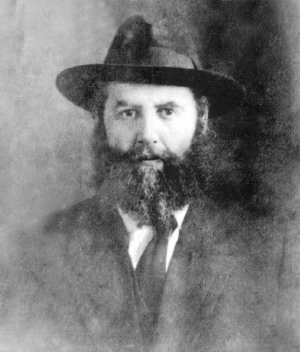

A Year in the Life of the Rebbe Rashab Stories from 5670
Why did the Rebbe Rashab meet with a team of writers and journalists? How did the Rebbe and R’ Chaim Soloveitchik enter the train compartment? Why were the Rebbe and his son incognito in Baranowitz for an entire Shabbos? How many talmidim were accepted to Yeshivas Tomchei T’mimim out of the 150 who

In the notes of the Rebbe Rayatz listing the maamarim that his father said each year of his nesius, he writes that in 5670 (1909/1910) the Rebbe Rashab said thirty-one maamarim.
(From the journal of the Rebbe Rayatz)
LOFTY REVELATIONS AT THE START OF 5670
Before Sukkos 5670, one of the beams in the big zal moved out of place. Rebbetzin Rivka, the wife of the Rebbe Maharash, told her son that perhaps they should not have the Simchas Torah farbrengen in that room because of the danger, for the large crowd and the dancing could cause an accident.
Indeed, every Simchas Torah, many guests arrived, yeshiva bachurim and many Chassidim from all over Russia, as well as local residents who came to see pure Chassidic joy.
The Rebbe said there was no reason to worry.
The Rebbetzin said, “If you take the responsibility …”
The Rebbe said, “Once the issue was brought up, it is not necessary,” and the farbrengen took place in the small zal.
That farbrengen was described in Lubavitch V’Chayaleha. It went on until late at night. They davened Mincha before the seuda.
At the eastern wall of the small zal, north of the Aron Kodesh, they opened a door which had previously been closed up and the Rebbe and the guests came through this door to the farbrengen. Due to the renovations, the Rebbe’s chair was placed next to the door of his father’s room. Apparently this was the reason that, from the outset, the Rebbe spoke about his father.
The Rebbe took mashke often, which was not his practice, and each time he mentioned something his father said, he cried.
“I was a boy, long before my bar mitzva,” said R’ Folye Kahn. “I stood on a high spot on the bima on the side of the hall and I can still visualize the scene. The Rebbe sobbed loudly. This was both a wonder and moving for me.”
“Were you at the passing of my father?” suddenly asked the Rebbe of the mashpia, R’ Shmuel Gronem. When the latter said no, the Rebbe said, “Here, right here, is where they purified his body.”
There was a feeling of tension in the air because of the unexpected farbrengen with many giluyim (revelations). Everyone crowded closer in order to hear. Due to the pressure, many of the tables and benches were broken.
The Rebbe said, “His Simchas Torah … his Yud-Tes Kislev … Those who saw the revelation of primordial light are myself and R’ Monish, Gronem and maybe Moshe too,” referring to the Rebbe’s chozer who was very close to him.
The Rebbe then loudly and emotionally said, “I am my father’s servant; I am a Chassid of my father. G-dliness wishes to speak. There is no difference through whom, as long as he is a vessel for it.”
Saying this, he burst into bitter tears and could not calm down.
The wealthy Chassid, R’ Monish, suddenly felt very weak due to the crush, the heat, and the sweating. Some Chassidim rushed to bring him a cup of cold water from the room where the two Rebbetzins sat, Rebbetzin Rivka the wife of the Rebbe Maharash and Rebbetzin Shterna Sara the wife of the Rebbe Rashab.
When they saw the crush and the pushing, the women were frightened and rushed to the doorway of the hall in order to see what was happening. When Rebbetzin Shterna Sara saw that the Rebbe was highly emotional, she asked him not to drink anymore and to stop the farbrengen and to rest a bit.
The Rebbe replied in surprise, “You?”
The Rebbetzin clapped her hands in consternation. “You don’t feel well, go and rest.”
But the Rebbe continued to farbreng, his face aglow and yet with a look of somberness and pain:
“What – not well – me? I am well and if only my son was this well.”
Minutes later, his mother Rebbetzin Rivka entered the room. Apparently, her daughter-in-law, the Rebbe’s wife, had asked her to speak to her son and get him to stop farbrenging once she knew that his health wasn’t optimal.
As soon as his mother entered, the Rebbe stood up in her honor. He was followed by all the Chassidim. It was wondrous that he noticed her entry since he was sitting with his back to the door through which she entered. His worried mother went over to him and also pleaded with him to stop the farbrengen, but he loudly replied, “Mamma, I am your son until the coming of Moshiach. I am father’s son, his Chassid, and his servant. I am my father’s servant until the coming of Moshiach.”
After a moment’s thought he added, “My hair fell out due to three things: my toiling in Tanya and Imrei Bina, and the passing of my father.”
Then he said a line that made hearts tremble:
“G-dliness wishes to speak and there is through whom – expand your mouth and I will fill it.”
Since it was Friday afternoon, the Rebbe refused to eat anything, even something light, after the time for Kiddush, but he continued drinking copiously of the mashke. The mashke, the heat and the sweating affected the Rebbe’s health. Some Chassidim who stood near him asked the many Chassidim to move back to enable fresh air to flow, but due to the crush, this was not possible.
The Rebbe stood up and said, “Do not allow me to leave until I say a sicha and a maamer; a sicha about how Tomchei T’mimim ought to be, and a maamer …”
Then he went to a back room in order to rest. The Chassidim waited for hours until midnight, since they assumed the Rebbe would return, but his precarious health did not allow this. That Simchas Torah farbrengen was remembered by Chassidim for years to come for the many giluyim that took place.
(Lubavitch V’Chayoleha; Zicaron L’Vnei Yisroel; Shmuos V’Sippurim)
REPEATED SIFTING
R’ Chaim Eliezer Karasik related:
“I can testify that in the summer of 5670, about 150 talmidim wanted to be accepted in the yeshiva. After sifting and sifting, only 40 were accepted and the rest had to go home or learn in other yeshivos.
“Till today, I can still envision the cries and wails of those talmidim who were not accepted, as well as the joy of the talmidim who were accepted. They said that in Lubavitch tests were mandatory because in Lubavitch ‘they hate a fool.’”
(T’shura)
WHY ARE YOU WORSE THAN OTHERS?
In 5670, the Rebbe suffered from pain in his throat. A doctor was called who placed compresses to ease the pain. One of the times that the doctor came, the Rebbe said he had absolutely no time for this. The doctor, who was respectful of the Rebbe, left. When he came again, the same thing repeated itself and the Rebbe said he had no time.
This upset Rebbetzin Shterna Sarah who said to the Rebbe, “Why are you worse than all Jews? People come to ask you things and you devote about ten minutes to each one or whatever amount of time. Why are you worse than them? Give yourself half an hour!”
The Rebbe said, “But I still don’t have the time.”
The doctor came several times until the Rebbe allowed him to do what was necessary.
(Likkutei Sippurim)
SEEING HIDDEN MATTERS
In 5670, the Rebbe spent time in the resort area of Babinowitz. The Rebbe wasn’t feeling well and after improving somewhat, he went to Moscow in order to consult a top doctor. He returned to Lubavitch halfway through the month of Elul.
At this time, the Chassid R’ Yitzchok, son of R’ Lima Minkowitz, arrived from Nevel in Lubavitch. He told the Rebbe that the Chassidim in Nevel had sent him to inquire about the Rebbe’s health.
The Rebbe told him that at that moment, he felt piercing pains all around, but compared to what he had felt previously, his condition was much better.
Then the Chassid submitted the panim that the Chassidim had given him for the Rebbe. The Rebbe took one of them, looked at it, and set it aside without saying a word. Then he took the next one, read it, and said that this Chassid should immediately set out for Crimea where people went when their lungs were weak.
When R’ Yitzchok returned to Nevel, he discovered that the author of the first pidyon nefesh had died within a few days, while the other man had received the Rebbe’s answer and had done as he said. He did better for a while, but then, since he was quite sick, he also did not live long.
(Likkutei Sippurim)
THE REBBE RECEIVED JOURNALISTS
At the famous conference of rabbanim that took place in 5670 in Petersburg, the Rebbe Rashab and Rabbi Chaim Soloveitchik of Brisk stayed in the same hotel. Since they were both there, writers and reporters convened there from the Yiddish press Haint, Fraint, and Moment.
First, they went to see R’ Chaim and asked him about his views and what had developed over the course of the conference, but his brief response was that he knew the news from what it said in Haint. That was his way of telling them that he wasn’t interested in talking to them.
Then they went to the Rebbe’s room where one of those close to the Rebbe’s household received them (I think it was the Chassid, R’ Moshe Rosenblum, editor of HaAch) and asked them what they wanted. They introduced themselves and said they wanted to see the Lubavitcher Rebbe. He asked them to wait and said he would inform the Rebbe of their coming.
After a few minutes he emerged and said that the Rebbe asked them to wait a little. The journalists mentioned this in their articles and also described the Rebbe’s apartment as having three large spacious rooms etc.
After waiting a while, the inner door opened and the Rebbe invited them in. Afterward, they recounted in their articles that they saw an amazing man, well dressed, whose eyes exuded wisdom etc. The Rebbe asked them to sit down and they introduced themselves and stated the purpose of their visit. The Rebbe did not speak much with them, as they described, but presented his views in general and mainly regarding that which pertained to the conference of the rabbanim. The Rebbe added and stressed that he would not budge from the laws and attitudes of our holy Torah and from the path of our ancestors and the Rebbeim, not even an iota.
The journalists and writers chose to present these two tzaddikim because they were considered by one and all as the “life spirit” of the conference.
(Likkutei Sippurim)
HONORING TORAH SAGES
When I lived in Homil after I married, there was a refugee from the Slonimer Chassidim there. He told me that in the winter of 5670, the Rebbe Rashab attended a conference of rabbanim in Petersburg. The Rebbe, who was one of the central pillars of the conference, put much effort into it. Prior to the conference he traveled to a preparatory meeting.
The Rebbe spent Shabbos in Baranowitz together with his son, later to be the Rebbe Rayatz. The wealthy Chassid R’ Shmuel Gurary was with them. They stayed in a local inn and attended the davening at the shul of the Slonimer Chassidim.
The Slonimer Chassidim did not know who the guests were, but could tell from their refined appearance that they were distinguished men. When they wanted to call the Rebbe Rashab up to the Torah, they asked his name and the Rebbe said his name, ben HaRav Rebbi Shmuel.
During the third Shabbos meal, the Rebbe sat with the Slonimer Chassidim and asked them to say a D’var Torah from their Rebbe. The Chassidim said that it wasn’t their custom to say Divrei Torah at this time. They just sang niggunim in honor of the Shabbos. The Rebbe pleaded with them and they agreed to say a D’var Torah from their Rebbe.
Sunday morning, the Slonimer Chassidim found out that R’ Chaim of Brisk would be passing through on his way to the conference of rabbanim, and would spend some time at the train station. So the Jews of the city, including the Slonimer Chassidim, went to the train station where they saw, to their surprise, R’ Chaim Brisker walking with the Rebbe Rashab. That is when they realized that their Shabbos guest was none other than the Lubavitcher Rebbe.
The Chassid concluded his story and said: When they had to board the train, R’ Chaim honored the Rebbe and said he should go up first, while the Rebbe honored R’ Chaim and asked him to go first. They ended up embracing and going in together.
HE FULFILLS THE WILL OF THOSE WHO FEAR HIM
The previous story is also told in a slightly different version:
When the Rebbe Rashab and his son returned from the preparatory meeting in Vilna, they spent Shabbos in Baranowitz which wasn’t a particularly large town.
When they arrived at the train station in Baranowitz, it was late Thursday night. Outside, there were some wagon drivers, some of whom were Jewish, who waited to take passengers from the train station to the town. The Rebbe and his son chose a simple wagon, for they did not want to ride in an upholstered wagon out of concern for shatnez in the seats.
The wagon driver was a simple, G-d fearing Jew. As soon as he saw the guests, he realized that they weren’t ordinary people. He asked them where they wanted to go and they asked him to take them to the local inn. The wagon driver realized this was a rare opportunity and he invited them to stay in his house, saying it was large and had a clean, spacious room for guests. The Rebbe and his son did not accept the invitation and asked him to take them to the local inn.
Before saying goodbye, the wagon driver said at least could they come to him on Shabbos morning to have a hot drink. He said he had a cow. He even showed them that his house wasn’t far from the inn.
The Rebbe and his son paid him generously and went into the inn.
Shabbos morning, the Rebbe said to his son they had to go to the wagon driver’s house for a hot drink as they had been requested. Upon arriving there, they found him reciting T’hillim out loud and sweetly. When he saw his distinguished guests, he rejoiced and welcomed them. He served them coffee with milk that had been cooked and was on the stove all night and had become a bit red. There was nobody happier than he, as he hosted these important guests, even though he did not know their identity.
After they drank, the Rebbe and his son continued to the local shul. The worshipers saw that they were not the typical businessmen who stayed with them on occasion, but nobody knew who they were. When they had an aliya to the Torah, they pledged generously. Nobody dared to ask them who they were except for their names by which they were called to the Torah.
The guests went back to shul for Mincha. The shamash (sexton), who was used to guests leaving right after Shabbos, went to them after Maariv in order to collect the money they had pledged in the morning when they had their aliyos. At just that moment, someone from a nearby town, who regularly went to Lubavitch, arrived at the inn. When he saw the guests, he immediately recognized the Rebbe and said excitedly to the innkeeper and the other guests who were there, “That is the Lubavitcher Rebbe and his son!”
The announcement generated great excitement and the news spread rapidly in Baranowitz. Many went to the inn and asked the Rebbe to pardon them for not honoring him as befit his station. They asked him to stay with them for at least one more day and promised to donate nice sums toward Tomchei T’mimim, but the Rebbe said he could not stay. When the train came, he and his son returned to Lubavitch.
“You see,” said the man who told the story, “that Hashem fulfills the will of those who fear him. Since the Rebbe did not want people to know who he was, they did not know all Shabbos and only found out shortly before he left.”
(Likkutei Sippurim)
Menachem Ziegelboim. "A Year in the Life of the Rebbe Rashab Stories from 5670." Beis Moshiach, no. 899 (October 23, 2013).